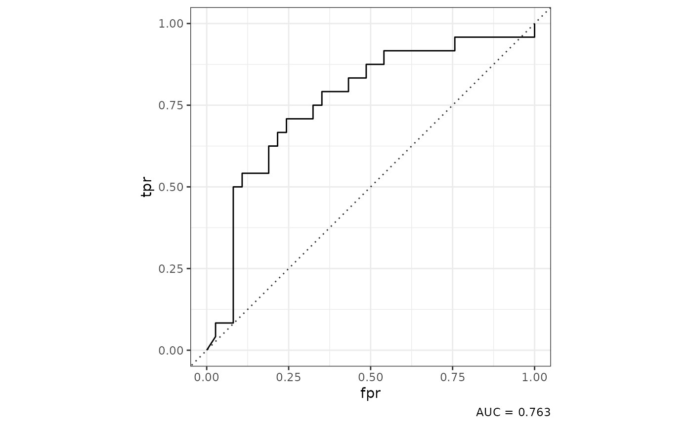
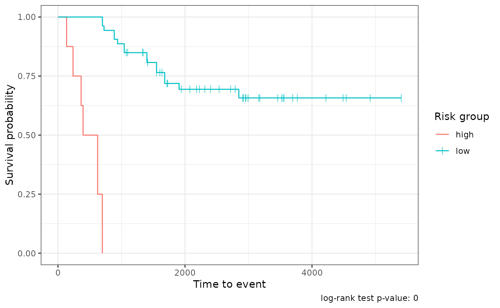

Building predictive models
Timothy Keyes
2023-05-08
modeling.Rmdtidytof implements several functions for building predictive models using sample- or patient-level data.
Accessing the data for this vignette
To illustrate how they work, first we download some patient-level
data from this
paper and combine it with sample-level clinical annotations in one
of tidytof’s built-in datasets
(ddpr_metadata).
data(ddpr_metadata)
# link for downloading the sample-level data from the Nature Medicine website
data_link <-
"https://static-content.springer.com/esm/art%3A10.1038%2Fnm.4505/MediaObjects/41591_2018_BFnm4505_MOESM3_ESM.csv"
# download the data and combine it with clinical annotations
ddpr_patients <-
readr::read_csv(data_link, skip = 2L, n_max = 78L, show_col_types = FALSE) %>%
dplyr::rename(patient_id = Patient_ID) %>%
dplyr::left_join(ddpr_metadata, by = "patient_id") %>%
dplyr::filter(!str_detect(patient_id, "Healthy"))
# preview only the metadata (i.e. non-numeric) columns
ddpr_patients %>%
dplyr::select(where(~ !is.numeric(.x))) %>%
head()
#> # A tibble: 6 × 8
#> patient_id gender mrd_risk nci_rome_risk relapse_status type_of_relapse cohort
#> <chr> <chr> <chr> <chr> <chr> <chr> <chr>
#> 1 UPN1 Male Interme… Standard Yes Early Train…
#> 2 UPN1-Rx Male Interme… Standard Yes Early Train…
#> 3 UPN2 Male Interme… Standard No NA Train…
#> 4 UPN3 Female Standard Standard No NA Train…
#> 5 UPN4 Male Standard Standard No NA Valid…
#> 6 UPN5 Female Standard High No NA Valid…
#> # ℹ 1 more variable: ddpr_risk <chr>The data processing steps above result in a tibble called
ddpr_patients. The numeric columns in
ddpr_patients represent aggregated cell population features
for each sample (see Supplementary
Table 5 in this paper for details). The non-numeric columns
represent clinical metadata about each sample (run
?ddpr_metadata for more information). Of the metadata
columns, the most important are the ones that indicate if a patient will
develop refractory disease (“relapse”), and when/if that will happen.
This information is stored in the relapse_status and
time_to_relapse columns, respectively.
There are also a few preprocessing steps that we might want to perform now to save us some headaches when we’re fitting models later.
ddpr_patients <-
ddpr_patients %>%
# convert the relapse_status variable to a factor
# and create the time_to_event and event columns for survival modeling
dplyr::mutate(
relapse_status = as.factor(relapse_status),
time_to_event = dplyr::if_else(relapse_status == "Yes", time_to_relapse, ccr),
event = dplyr::if_else(relapse_status == "Yes", 1, 0)
)In the next part of this vignette, we’ll use this patient-level data to build some predictive models using resampling procedures like k-fold cross-validation and bootstrapping.
Building a classifier using elastic net-regularized logistic regression
First, we can build an elastic net classifier to predict which
patients will relapse and which patients won’t (ignoring time-to-event
data for now). For this, we can use the relapse_status
column in ddpr_patients as the outcome variable:
# find how many of each outcome we have in our cohort
ddpr_patients %>%
dplyr::count(relapse_status)
#> # A tibble: 3 × 2
#> relapse_status n
#> <fct> <int>
#> 1 No 37
#> 2 Yes 24
#> 3 NA 12We can see that not all of our samples are annotated, so we can throw away all the samples that don’t have a clinical outcome associated with them.
ddpr_patients_unannotated <-
ddpr_patients %>%
dplyr::filter(is.na(relapse_status))
ddpr_patients <-
ddpr_patients %>%
dplyr::filter(!is.na(relapse_status))In the original DDPR paper, 10-fold cross-validation was used to tune
a glmnet model and to estimate the error of that model on new datasets.
Here, we can use the tof_split_data() function to split our
cohort into a training and test set either once 10 times using k-fold
cross-validation or bootstrapping. Reading the documentation of
tof_split_data() demonstrates how to use other resampling
methods (like bootstrapping).
set.seed(3000L)
training_split <-
ddpr_patients %>%
tof_split_data(
split_method = "k-fold",
num_cv_folds = 10,
strata = relapse_status
)
training_split
#> # 10-fold cross-validation using stratification
#> # A tibble: 10 × 2
#> splits id
#> <list> <chr>
#> 1 <split [54/7]> Fold01
#> 2 <split [54/7]> Fold02
#> 3 <split [54/7]> Fold03
#> 4 <split [54/7]> Fold04
#> 5 <split [55/6]> Fold05
#> 6 <split [55/6]> Fold06
#> 7 <split [55/6]> Fold07
#> 8 <split [56/5]> Fold08
#> 9 <split [56/5]> Fold09
#> 10 <split [56/5]> Fold10The output of tof_split_data() varies depending on which
split_method is used. For cross-validation, the result is a
rset object from the rsample package.
rset objects are a type of tibble with two columns:
-
splits- a column in which each entry is anrsplitobject (which contains a single resample of the full dataset) -
id- a character column in which each entry represents the name of the fold that each entry insplitsbelongs to.
We can inspect one of the resamples in the splits column
to see what they contain:
my_resample <- training_split$splits[[1]]
print(my_resample)
#> <Analysis/Assess/Total>
#> <54/7/61>Note that you can use rsample::training and
rsample::testing to return the training and test
observations from each resampling:
my_resample %>%
rsample::training() %>%
head()
#> # A tibble: 6 × 1,854
#> patient_id Pop_P_Pop1 CD19_Pop1 CD20_Pop1 CD24_Pop1 CD34_Pop1 CD38_Pop1
#> <chr> <dbl> <dbl> <dbl> <dbl> <dbl> <dbl>
#> 1 UPN1 3.06 0.583 0.00449 0.164 1.94 0.416
#> 2 UPN1-Rx 0.0395 0.618 0.0634 0.572 2.93 0.944
#> 3 UPN2 0.139 0.0662 0.0221 0.0825 2.25 0.454
#> 4 UPN3 0.633 0.0234 0.0165 0.0327 2.25 0.226
#> 5 UPN4 0.0443 0.129 0.0447 0.232 2.47 0.336
#> 6 UPN5 0.0647 0.0577 0.0163 0.162 2.89 0.406
#> # ℹ 1,847 more variables: CD127_Pop1 <dbl>, CD179a_Pop1 <dbl>,
#> # CD179b_Pop1 <dbl>, IgMi_Pop1 <dbl>, IgMs_Pop1 <dbl>, TdT_Pop1 <dbl>,
#> # CD22_Pop1 <dbl>, tIkaros_Pop1 <dbl>, CD79b_Pop1 <dbl>, Ki67_Pop1 <dbl>,
#> # TSLPr_Pop1 <dbl>, RAG1_Pop1 <dbl>, CD123_Pop1 <dbl>, CD45_Pop1 <dbl>,
#> # CD10_Pop1 <dbl>, Pax5_Pop1 <dbl>, CD43_Pop1 <dbl>, CD58_Pop1 <dbl>,
#> # HLADR_Pop1 <dbl>, p4EBP1_FC_Basal_Pop1 <dbl>, pSTAT5_FC_Basal_Pop1 <dbl>,
#> # pPLCg1_2_FC_Basal_Pop1 <dbl>, pAkt_FC_Basal_Pop1 <dbl>, …
my_resample %>%
rsample::testing() %>%
head()
#> # A tibble: 6 × 1,854
#> patient_id Pop_P_Pop1 CD19_Pop1 CD20_Pop1 CD24_Pop1 CD34_Pop1 CD38_Pop1
#> <chr> <dbl> <dbl> <dbl> <dbl> <dbl> <dbl>
#> 1 UPN6 5.62 0.550 0.00374 0.622 2.86 0.342
#> 2 UPN10-Rx 0.00240 0.167 0.203 0.802 2.57 0.822
#> 3 UPN13 0.0634 0.0300 0.0219 0.109 2.34 0.314
#> 4 UPN22-Rx 0.0643 1.68 0.0804 1.56 3.06 0.529
#> 5 UPN58 0.00546 0.00918 0.0168 0.480 2.70 0.112
#> 6 UPN95 0.300 0.389 0.00454 0.697 2.45 0.247
#> # ℹ 1,847 more variables: CD127_Pop1 <dbl>, CD179a_Pop1 <dbl>,
#> # CD179b_Pop1 <dbl>, IgMi_Pop1 <dbl>, IgMs_Pop1 <dbl>, TdT_Pop1 <dbl>,
#> # CD22_Pop1 <dbl>, tIkaros_Pop1 <dbl>, CD79b_Pop1 <dbl>, Ki67_Pop1 <dbl>,
#> # TSLPr_Pop1 <dbl>, RAG1_Pop1 <dbl>, CD123_Pop1 <dbl>, CD45_Pop1 <dbl>,
#> # CD10_Pop1 <dbl>, Pax5_Pop1 <dbl>, CD43_Pop1 <dbl>, CD58_Pop1 <dbl>,
#> # HLADR_Pop1 <dbl>, p4EBP1_FC_Basal_Pop1 <dbl>, pSTAT5_FC_Basal_Pop1 <dbl>,
#> # pPLCg1_2_FC_Basal_Pop1 <dbl>, pAkt_FC_Basal_Pop1 <dbl>, …From here, we can feed training_split into the
tof_train_model function to tune a logistic regression
model that predicts the relapse_status of a leukemia patient. Be sure to
check out the tof_create_grid documentation to learn how to
make a hyperparameter search grid for model tuning (in this case, we
limit the mixture parameter to a value of 1, which fits a sparse lasso
model).
Also note that, in this case, for illustrative purposes we’re only incorporating features from one of the populations of interest (population 2) into the model, whereas the original model incorporated features from all 12 populations (and likely required quite a bit of computational power as a result).
hyperparams <- tof_create_grid(mixture_values = 1)
class_mod <-
training_split %>%
tof_train_model(
predictor_cols = c(contains("Pop2")),
response_col = relapse_status,
model_type = "two-class",
hyperparameter_grid = hyperparams,
impute_missing_predictors = TRUE,
remove_zv_predictors = TRUE # often a smart decision
)The output of tof_train_model is a
tof_model, an object containing information about the
trained model (and that can be passed to the tof_predict
and tof_assess_model verbs). When a tof_model
is printed, some information about the optimal hyperparamters is
printed, and so is a table of the nonzero model coefficients in the
model.
print(class_mod)
#> A two-class `tof_model` with a mixture parameter (alpha) of 1 and a penalty parameter (lambda) of 1e-10
#> # A tibble: 28 × 2
#> feature coefficient
#> <chr> <dbl>
#> 1 p4EBP1_dP_IL7_Pop2 -3.10
#> 2 pCreb_dP_PVO4_Pop2 -2.66
#> 3 TSLPr_Pop2 2.07
#> 4 CD43_Pop2 2.00
#> 5 pSTAT5_FC_PVO4_Pop2 -1.80
#> 6 pS6_dP_IL7_Pop2 1.56
#> 7 pPLCg1_2_dP_PVO4_Pop2 1.44
#> 8 (Intercept) -1.43
#> 9 pSTAT5_FC_BCR_Pop2 1.24
#> 10 pErk_dP_IL7_Pop2 -1.23
#> # ℹ 18 more rowsAfter training our model, we might be interested in seeing how it
performs. One way to assess a classification model is to see how well it
works when applied directly back to the data it was trained on (the
model’s “training data”). To do so, we can use the
tof_assess_model() function with no arguments:
training_classifier_metrics <-
class_mod %>%
tof_assess_model()tof_assess_model() returns a list of several model
assessment metrics that differ depending on the kind of
tof_model you trained. For two-class classifier models,
among the most useful of these is the confusion_matrix,
which shows how your classifier classified each observation relative to
its true class assignment.
training_classifier_metrics$confusion_matrix
#> # A tibble: 4 × 3
#> true_outcome predicted_outcome num_observations
#> <chr> <chr> <int>
#> 1 No No 37
#> 2 No Yes 0
#> 3 Yes No 0
#> 4 Yes Yes 24In this case, we can see that our model performed perfectly on its
training data (which is expected, as the model was optimized using these
data themselves!). You can also visualize the model’s performance using
the tof_plot_model() verb, which in the case of a two-class
model will give us a Receiver-Operating Characteristic (ROC) curve:
class_mod %>%
tof_plot_model()
As shown above, tof_plot_model() will return a
receiver-operating curve for a two-class model. While it’s unusual to
get an AUC of 1 in the machine learning world, we can note that in this
case, our classification problem wasn’t particularly difficult (and we
had a lot of input features to work with).
After training a model, it generally isn’t sufficient to evaluate how
a model performs on the training data alone, as doing so will provide an
overly-optimistic representation of how the model would perform on data
it’s never seen before (this problem is often called “overfitting” the
model to the training data). To get a fairer estimate of our model’s
performance on new datasets, we can also evaluate its cross-validation
error by calling tof_assess_model() and
tof_plot_model() with the new_data argument
set to “tuning”.
cv_classifier_metrics <-
class_mod %>%
tof_assess_model(new_data = "tuning")
class_mod %>%
tof_plot_model(new_data = "tuning")
In this case, we plot an ROC Curve using the predictions for each observation when it was excluded from model training during cross-validation, an approach that gives a more accurate estimate of a model’s performance on new data than simple evaluation on the training dataset.
Building a survival model using elastic net-regularized cox regression
Building off of the ideas above, a more sophisticated way to model our data is not simply to predict who will relapse and who won’t, but to build a time-to-event model that estimates patients’ probabilities of relapse as a function of time since diagnosis. This approach is called “survival modeling” (specifically, in this case we use Cox-proportional hazards modeling) because it takes into account that patients have adverse events at different times during their course of disease (i.e. not everyone who relapses does so at the same time).
To build a survival model using tidytof, use the
tof_train_model() verb while setting the
model_type flag to “survival”. In addition, you need to
provide two outcome columns. The first of these columns
(event_col) indicates if a patient relapsed
(i.e. experienced the event-of-interest) or if they were censored after
a certain amount of follow-up time. The second (time_col)
indicates how much time it took for the patient to relapse or to be
censored from the analysis.
hyperparams <- tof_create_grid(mixture_values = 1)
survival_mod <-
training_split %>%
tof_train_model(
predictor_cols = c(contains("Pop2")),
time_col = time_to_event,
event_col = event,
model_type = "survival",
hyperparameter_grid = hyperparams,
impute_missing_predictors = TRUE,
remove_zv_predictors = TRUE # often a smart decision
)
print(survival_mod)
#> A survival `tof_model` with a mixture parameter (alpha) of 1 and a penalty parameter (lambda) of 3.162e-03
#> # A tibble: 40 × 2
#> feature coefficient
#> <chr> <dbl>
#> 1 pErk_dP_TSLP_Pop2 -7.03
#> 2 pCreb_dP_PVO4_Pop2 -5.47
#> 3 CD19_Pop2 -3.73
#> 4 CD34_Pop2 3.63
#> 5 pSTAT5_FC_BCR_Pop2 3.40
#> 6 HLADR_Pop2 -3.38
#> 7 pPLCg1_2_dP_IL7_Pop2 3.33
#> 8 pPLCg1_2_dP_PVO4_Pop2 3.14
#> 9 pSyk_dP_TSLP_Pop2 2.88
#> 10 CD123_Pop2 2.77
#> # ℹ 30 more rowsOnce a survival model is trained, it can be used to predict a
patient’s probability of the event-of-interest at different times
post-diagnosis. However, the most common way that survival models are
applied in practice is to use each patient’s predicted relative risk of
the event-of-interest to divide patients into low- and high-risk
subgroups. tidytof can do this automatically according to
the most optimal split obtained using the log-rank test of all possible
split points in the dataset with tof_assess_model(). In
addition, it will return the predicted survival curve for each patient
over time:
survival_metrics <-
survival_mod %>%
tof_assess_model()
survival_metrics
#> $model_metrics
#> # A tibble: 3 × 2
#> metric value
#> <chr> <dbl>
#> 1 neg_log_partial_likelihood 1.76e+ 1
#> 2 concordance_index 1 e+ 0
#> 3 log_rank_p_value 1.47e-22
#>
#> $survival_curves
#> # A tibble: 61 × 6
#> row_index survival_curve relative_risk time_to_event event risk_group
#> <chr> <list> <dbl> <dbl> <dbl> <chr>
#> 1 1 <tibble [54 × 2]> 2.83e+3 1043 1 low
#> 2 2 <tibble [54 × 2]> 2.61e+3 1043 1 low
#> 3 3 <tibble [54 × 2]> 1.58e-8 5406 0 low
#> 4 4 <tibble [54 × 2]> 2.09e-4 4917 0 low
#> 5 5 <tibble [54 × 2]> 9.98e-3 4538 0 low
#> 6 6 <tibble [54 × 2]> 6.62e-1 4490 0 low
#> 7 7 <tibble [54 × 2]> 4.09e+9 136 1 high
#> 8 8 <tibble [54 × 2]> 2.57e+8 364 1 high
#> 9 9 <tibble [54 × 2]> 1.27e+9 237 1 high
#> 10 10 <tibble [54 × 2]> 2.31e+4 886 1 low
#> # ℹ 51 more rowsFor survival models, tof_plot_model() plots the average
survival curves for both the low- and high-risk groups:
survival_mod %>%
tof_plot_model() 
cv_survival_metrics <-
survival_mod %>%
tof_assess_model(new_data = "tuning")
survival_mod %>%
tof_plot_model(new_data = "tuning")